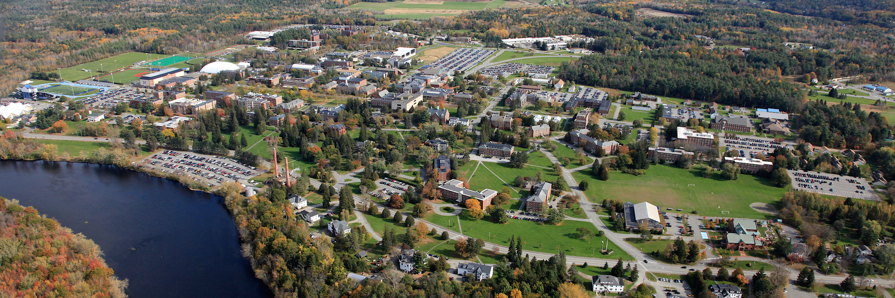

I graduated from Marshfield High School in 2016. The following fall, I went to the University of Rhode Island to pursue a degree in Marketing. However due to financial reasons, I transferred here to UMaine and I couldn't be happier. I am still in the Maine Business school and working towards a marketing degree and I expect to graduate as a part of the class of 2020. I really enjoy learning about the functions of business because it leads to great real life opportunities and you never know where it can take you. With a marketing degree, I hope to work in marketing and advertising for a big corporation like Hasbro. Click here to return to the homepage!
